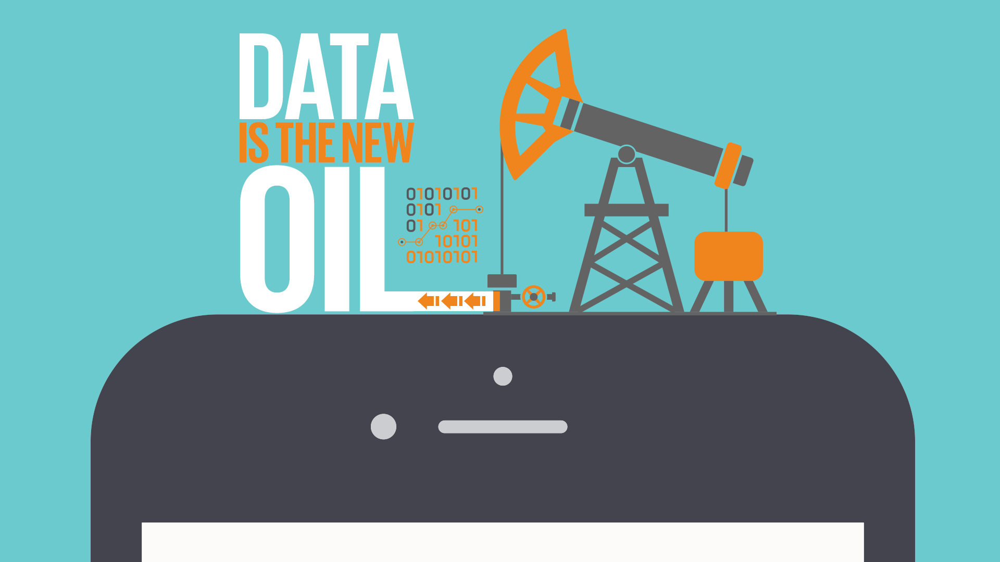
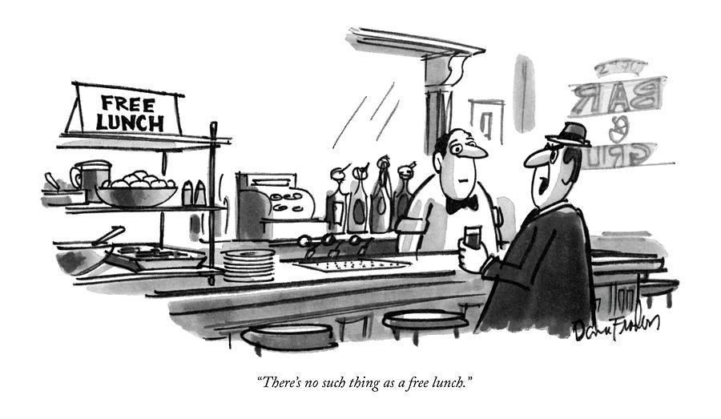
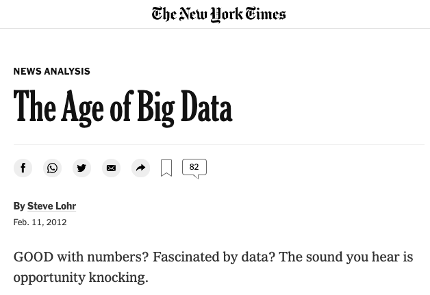

1.1 What is (research) data science?¶
There is an incredible abundance of webpages, Youtube videos, newspaper articles and books defining what data science is. Instead of providing yet another clear-cut single definition of such a complex, multifaced and buzzwordy topic, we have decided to approach data science by discussing the main components of this profession and from there presenting what the role of a research data scientist is in particular.
In this submodule we will offer an overview of:
what we mean when we say “data” in data science
the different types of tasks that a data scientist covers
what role data science plays in research
Data¶
Data is central to data science
Data is not a natural resource

We start from the most essential element of this profession, data. The prompt availability of large-scale datasets for training face recognition algorithms or language models is not something that we should take for granted and it is absolutely not something that has always been in place. Concepts such as “Data mining” and “Data is the new oil” depict data as something crude, non human, like a natural, primitive and unrefined resource and hide the enormous amount of labour, resources, infrastructure and time that has taken to make such data available. While we will expand further around such concepts in lesson 1.3, we highlight already here a few central points that are essential in our course.
Scarcity & Abundance¶
The availability of data is a fairly new phenomenon
Acquiring data remains very complex
The abundance of data, which has led around ten years ago to the advent of another very popular buzzword, “big data”, is something our society has rapidly got accustomed to (due to its huge demand), but is a fairly new phenomenon. Let us consider a specific example from the field of speech recognition: In the Eighties a group of researchers at IBM research decided to develop a system that, instead of a top-down rules-based approach (a so-called knowledge system), would employ a statistical method focused on how often words appear in the same context. However to train such a method, an enormous amount of textual data would have been needed, especially compared to what was available back then. IBM researchers tried everything, from digitised technical manuals to children’s books and patents. Now that data is everywhere and everything is seen as data we tend to forget how rapidly things have changed with the advent of the Internet first and the World Wide Web right after, together with continuous investments in data storage facilities. To get a quick idea, check websites like Internet Live Stats or explore the collection of an impossible to achieve project such as The Internet Archive
Representativeness¶
Each dataset, no matter how large it is, remains a sample
The question we should ask ourselves is “how well can this be representative of the phenomenon I want to study?”
Together with data scarcity, the other aspect that we should never underestimate when we speak about data is whether they are representative of the phenomenon we aim to study. In a recent article by Anna Rogers, the author considers the following argument: “the size of the data is so large that, in fact, our training sets are not a sample at all, they are the entire data universe”. Rogers replies to it by saying that this argument would stand if the “data universe” that we use for training for instance a speech regognition system was the same as “the totality of human speech/writing”. It is not, and will hopefully never be, because collecting all speech is problematic for ethical, legal, and practical reasons. Anything less than that is a sample. Given the existing social structures, no matter how big that sample is, it is not representative due to (at least) unequal access to technology, unequal possibility to defend one’s privacy and copyright, and limited access to the huge volumes of speech produced in the “walled garden” platforms like Facebook.
Creation¶
Data is always the product of human decisions and actions
It is the outcome of an enormous amount of labour, resources, infrastructure and time

ImageNet is not an abstract resource, but the result of a gigantic effort and the specific representation of the World of 1) the people who have designed WordNet, 2) the researchers who have decided which WordNet categories are included and which are not in ImageNet and 3) the many, many annotators who have selected which images associate to concepts like “brother”, “boss”, “debtor”, “drug-addict” and “call girl”, all included both in WordNet and ImageNet (at least until 2019).
Data Science¶
We use the term to refer to a varied ensemble of practices, methodologies and tools that may be used to learn from or about data.

Having established that the necessary premise of data science is its relationship with data, the other fundamental component is constituted by a broad and multifaced ensemble of practices, methodoloogies and tools that, combined together, can lead to obtain “new insights” from or about a given dataset. If we consider Monica Rogati’s representation of the “Data science hierarchy of needs” we can see that while developing new machine learning models sits at the top of the pyramid, methaphorically becoming the most visible component of a data scientist’s work, this actually relies on many other steps, which we briefly introduce here and will be discussed in details in modules 2, 3 and 4.
Collecting and Storing¶
Data collection and storage is (often) part of our job
If data needs to be generated in the first place, this should be an entirely different project!
Part of the work of a data scientist is knowing the challenges and hurdles involved in data collection and storage. While, depending on the size of the team, such practices might be taken care of by software engineers or data curators, it is essential that we know who owns the data, which restrictions apply, how a resource should be stored for long-term preservation and made available to collaborators, how complex it would be to set up a secure environment such as a Data Safe Haven. In small team contexts, as data scientists we often take care directly of such responsibilities. Data collection additionally implies also data generation, in settings where the research team aims to produce a new dataset (instead of acquiring one already available). This would imply an even larger set of skills, ranging from selecting a representative sample, preparing annotation guidelines, hiring and monitoring the work of annotators, measuring their agreement and finding ways of improving their performance, etc. Our course does not cover such aspects because in many settings if data needs to be generated in the first place (through a data collection and annotation task for instance), that would become an independent project on its own.
Processing and Exploring¶
Data cleaning implies actions such as: removing, normalising, ignoring, structuring, correcting
This is an incredibly important and often undervalued part of our job
Data exploration allows you to know the collection under study
So that you can use it beyond its original purpose
Another famous expression in the community is “data cleaning” and many practicioners would say that 80% of their time is spent processing, wrangling, cleaning and preparing raw data to be used, by bringing structure in an unstructured chaos. While we do such steps, which often imply removing missing values in tables, ignoring images with inconsistent annotations, normalising labels to binary options, skipping words that might contained OCR errors in documents, etc, we should always think what we are losing by imposing our “clean” vision. Cleaning data means that we are imposing our control over a given collection and explicitly (or more often implicitly) shaping it following our own definition of “clean”. Additionally note that, even if this task takes generally the largest part of a data scientist’s work, it is often undervalued and, especially in an academic context, it is often done rapidly as a first stage in order to reach the data exploration and model building phases. Only issues emerging in these later phases would bring the research team to re-consider going through and improving the pre-processing step.
For many disciplines and companies, the new availability of large datasets is absolutely unprecedented. While we will focus later on how this is changing science as a whole, for the moment it is important to understand that defining new research questions or business goals is very complex, as without data exploration you often don’t know what is contained in the data and what’s not, how this could be used and which new insight you could derive. If we take an example directly from our work at the Turing, Project Odysseus relies on information on the level of activity in London during the pandemic, which is derived from data collected from JamCam cameras, traffic intersection monitors, and aggregate GPS activity which were initially adopted by another Turing project, the London Air Quality project. Knowing your data collection, the way it has been created and the additional information it might contain is an essential skill for a data scientist. For this reason in Module 3 we will focus on data exploration techniques, to help data scientists get a better understanding of the collection, allow collaborators to move from a general intuition to a specific question and allow serendipitous discoveries.
Modeling¶
Often presented as the core activity of a data scientist
We build models with a specific goal in mind
And (properly!) assess which solution is the best, in a given setting
 Image link
Modeling is generally considered the core activity of a data scientist. While we have already stressed the fact that modeling is just one of the steps of our work, it is also important to remark from the beginning on two aspects of modeling that are inherently present in each data science activity: first of all, that we build models with a specific goal in mind. In fact we focus a large part of our project scoping activities (which we will see in Lesson 1.2) on defining a specific question, a corresponding data science task and a measure of success. So the modeling that we do is always clearly focused to address a specific, well defined need.
Second, and highly related, modeling is about comparing solutions to determine what works “best” in a given setting. For instance, if the task is segmenting cells given a microscope image, we would first implement and test a series of established approaches for the task and then we would assess whether, for instance, recent advancements in the field of computer vision would offer improvements in this specific setting. As we will remark later, the job of a data scientist is usually not to improve over a given state-of-the-art method (this might be the job of a researcher in machine learning for computer vision for instance), but to implement and assess the current “best” approach for a given task. In certain situations, this might lead to an improvement over the state-of-the-art or it might just reconfirm that a very well known and established baseline remains the most reliable solution for a problem.
Data science in research¶
Never-experienced-before availability and often abundance of data
The emergence of a figure (the data scientist) able to work with it
Since the late 2000s academia started discussing “a new way of acquiring knowledge”
 Image link
A Fourth Paradigm?¶
From “Beyond the Data Deluge” (Bell et al., 2009, Science):
Experimental and theoretical science as the basic research paradigms for understanding nature
Recently, computer simulations have become an essential third paradigm
Now a fourth paradigm is emerging, consisting of the techniques and technologies needed to perform data-intensive science

As Bell, Hey and Szalay (2009) said in a famous short article in Science, for a long time “scientists have recognized experimental and theoretical science as the basic research paradigms for understanding nature. In recent decades, computer simulations have become an essential third paradigm […]” and now “a fourth paradigm is emerging, consisting of the techniques and technologies needed to perform data-intensive science. Today, some areas of science are facing hundred- to thousandfold increases in data volumes from satellites, telescopes, highthroughput instruments, sensor networks, accelerators, and supercomputers, compared to the volumes generated only a decade ago. […] Other research fields also face major data management challenges. In almost every laboratory, “born digital” data proliferate in files, spreadsheets, or databases stored on hard drives, digital notebooks, Web sites, blogs, and wikis. The management, curation, and archiving of these digital data are becoming increasingly burdensome for research scientists.”
Data-Driven Science?¶
From “The end of Theory” (Anderson, 2008, Wired):
Are we at the “end of theory” and the advent of “data-driven” science?
Is it true that “Correlation is enough” and that “we can analyze the data without hypotheses about what it might show”?
There is no need for a priori theory, models or hypotheses

In just a few years the discussion around the fourth-paradigm has moved to even a more contentious topic: The “end of theory” and the advent of “data-driven” science. Such discussion was started by a provocative article by Chris Anderson on Wired (2008) containing statements such as “Petabytes allow us to say: ‘Correlation is enough. We can analyze the data without hypotheses about what it might show. We can throw the numbers into the biggest computing clusters the world has ever seen and let statistical algorithms find patterns where science cannot. Correlation supersedes causation, and science can advance even without coherent models, unified theories, or really any mechanistic explanation at all.” As Kitchin (2014) has highlighted in similar tones there is “a powerful and attractive set of ideas at work in the empiricist epistemology that runs counter to the deductive approach that is hegemonic within modern science:
Big Data can capture a whole domain and provide full resolution;
there is no need for a priori theory, models or hypotheses;
through the application of agnostic data analytics the data can speak for themselves free of human bias or framing, and any patterns and relationships within Big Data are inherently meaningful and truthful;
meaning transcends context or domain-specific knowledge, thus can be interpreted by anyone who can decode a statistic or data visualization.
Data-Driven Science with a Critical Mindset¶
Our perception of data science in society and research has drastically changed
The core of our course will be on how to approach data, methods and questions in a critical way

Reading such statements now might leave us speechless, especially after a few years of discussions around the limitations of computational methods, of biases embedded in trained models, on the fact that data don’t speak for themselves or that we need experts in defining the scope of the study and interpret the results, and of the impact that neglecting or undervaluing all these things has on science and society as a whole. In our course we will spend a lot of time focusing on how to approach data, methods and research questions in a highly critical way to ensure (for the best we can) that the new findings that we encounter are reliable and reproducible.
Research data scientist¶
We are often central element in research projects (connecting data providers, domain experts, final users)
We will be in the position of asking “why” people want to use data science approaches
We contribute in shaping research directions and guaranteing reproducibility

If we consider the large-scale Living with Machines project, a five-year study on the Industrial Revolution using data-driven approache and which has over twenty members and currently five REG members working on it, we will see in how many different aspects they are now become essential elements. RDS are for instance highly involved in data acquisition, classification (based on the level of sensitivity) and storage. They coordinate the use of a secure environment (a Data Safe Haven) to work on copyright protected collections and ensure the secure egress of all outputs from this environment. They are also responsible of organising acquired materials in databases and of providing the necessary skills to other researchers on the project so that they will be able to access such resources easily. As the project employs many different types of data sources (digitised maps, newspaper articles and tables of census records), RDS develop tools for facilitating their adoption, for instance historical language models, methods for dealing with fuzzy string matching or for sampling resources) as well as they contribute to research papers based on data science methods (see for instance: Living Machines: A study of atypical animacy or Maps of a Nation?. On such works, RDS not only build benchmarks and assess the performance of the methods employed but especially contribute in shaping the research goal from the very beginning and make sure that results are reprodubile and limitations are clearly discussed in the paper.
Finally, they also take under their wings many project management tasks, for instance planning and leading specific sub-projects, taking care of scheduling milestones, deliverables and handling stake-holders expectations. While Living with Machines remains almost a unicum at the Turing for its size and its interdisciplinary dynamics, it offers a clear overview of the many many skills, duties and responsibilities that are part of our job.
In order to offer you a broad overview of such duties across Research Data Science projects, in module 1.2 we will start by examining the importance of the project lifecycle and how being proactive in shaping it around each specific research project will guarantee that we will be able to at least deliver the minimum valuable outcome that has been agreed initially by all parties involved. Due to the fact that data science is so present in public conversations in and out of academia, it is also our role to fight against the many myths and toxic narratives that are highly common regarding the field. On the opposite, our role involves making our collaborators aware of the many risks and challenges that data science poses. For this reason, module 1.3 will address many aspects of the current debate about Equality, Diversity and Inclusion (EDI) in data science. Finally, as we have already remarked, being a research data scientist implies working in highly interdisciplinary collaborative environments, so for this reason the last submodule, 1.4, will conclude discussing best practices for collaborative coding.
References¶
Anderson, C. (2008). The end of theory: The data deluge makes the scientific method obsolete. Wired magazine, 16(7), 16-07.
Bell, G., Hey, T., & Szalay, A. (2009). Beyond the data deluge. Science, 323(5919), 1297-1298.
Crawford, K. (2021). The Atlas of AI. Yale University Press.
D’ignazio, C., & Klein, L. F. (2020). Data feminism. MIT press.
Kitchin, R. (2014). Big Data, new epistemologies and paradigm shifts. Big data & society, 1(1).
Rogers, A. (2021). Changing the World by Changing the Data. arXiv preprint arXiv:2105.13947.
Wickham, H. (2014). Tidy data. Journal of statistical software, 59(1), 1-23.